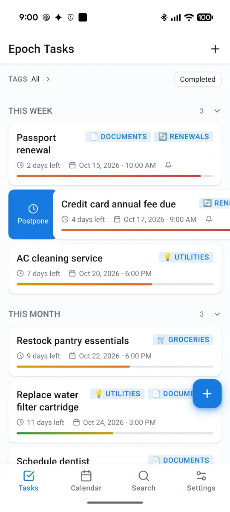
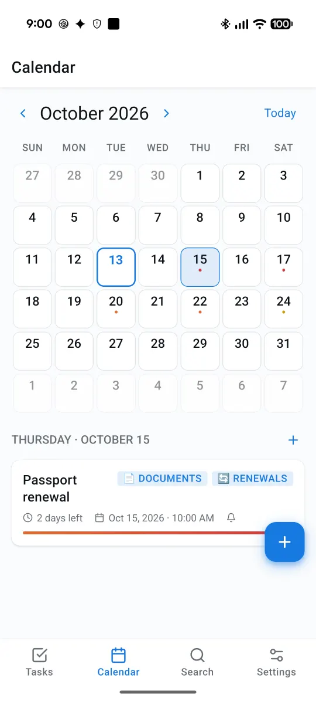
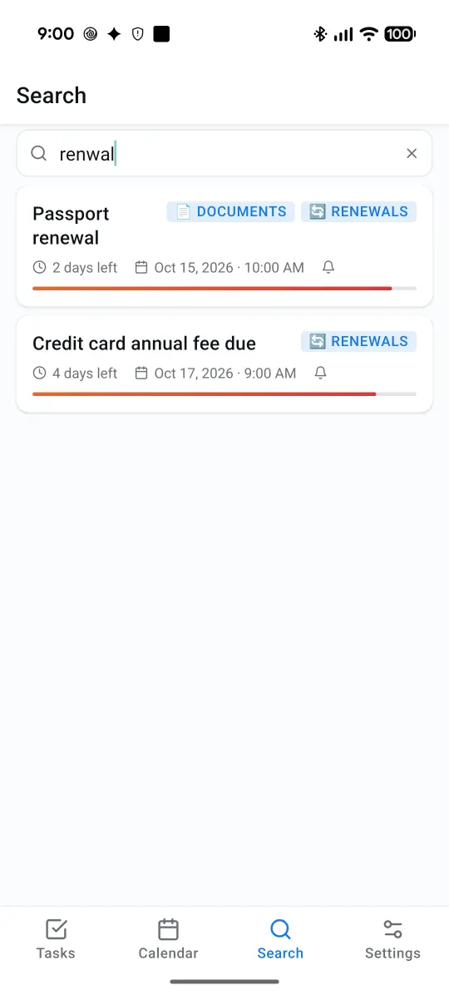
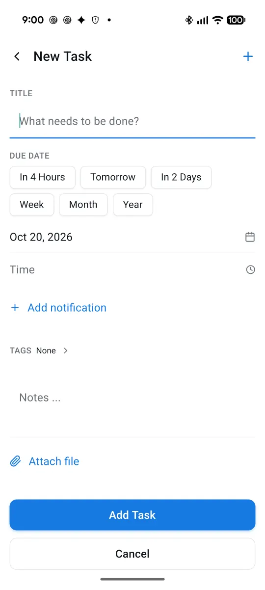

To-dos that keep time.
Renewals, bills, appointments, chores — every task shows how much time is left, and reminds you before it's late. Add tasks with a tap, or just ask Gemini, Claude or ChatGPT.
Just say it. It's on your list.
Talk to the assistant you already use. Epoch Tasks adds the task with its due date, finds what's due, and checks things off — and it shows up in the app within seconds.
For the things you can't afford to forget
The things that slip are rarely today's to-dos — they're the ones due in three weeks. Epoch Tasks keeps them in view until they're done.
Renewals & documents
Passport, driver's license, car insurance, subscriptions. Set it once with a reminder a month ahead.
Add renew passport to Epoch Tasks, due in two weeks
Bills & payments
Rent, card fees, taxes. Repeating tasks come back on schedule — paid this month, next month is already there.
Remind me to pay rent on the 1st of every month
Home & garden
Water the plants every 3 days, the filter every 6 months, smoke-alarm batteries once a year — any rhythm you like.
Water the plants every 3 days
Health & family
Dentist check-ups, school forms, vet visits — with a reminder before each. A new puppy? Walks every 4 hours.
Remind me to walk the puppy every 4 hours, starting at 8 PM
Errands & shopping
Return a package before the window closes, restock the pantry, pick up the dry cleaning.
What's due this week?
Work & study deadlines
Reports, applications, exam registration. The bar fills up as the deadline gets closer, so nothing sneaks up on you.
I submitted the visa form — mark it done
Fast, native, and out of your way




Connect your assistant in two minutes
Every assistant uses the same address. Add it once, sign in with the Google account you use in Epoch Tasks, and tap Allow — no codes or keys to copy.
https://connect.epochtasks.app/mcpClaude
- On claude.ai, go to Customize → Connectors and choose Add custom connector.
- Name it Epoch Tasks and paste the address.
- Click Connect, continue with Google and tap Allow.
- In a chat, switch it on under + → Connectors. Works in the phone app too.
ChatGPT
- On a computer, go to chatgpt.com/plugins.
- Click + → Add custom MCP server, name it Epoch Tasks and paste the address.
- For authentication choose OAuth, create it, then continue with Google and tap Allow.
- Ask away — ChatGPT confirms before it changes anything.
Gemini web setup
- On a computer, open gemini.google.com — custom apps can't be added from the Gemini phone app.
- Click the gear (Settings & help) → Connected Apps → Add a custom app.
- Paste the address, then continue with Google and tap Allow.
- In any chat — on the web or your phone — type @ and pick Epoch Tasks.
Gemini custom apps are rolling out by country, account type and plan.
Also works with Claude Code, Cursor, VS Code and other apps that support MCP servers. App can't sign in? In Epoch Tasks, Settings → Connect an AI Assistant gives you a personal link instead.
Your tasks are yours.
Epoch Tasks works fully on your phone. Sync and AI assistants are there when you want them — never required.
- No account, no sign-up: your tasks stay on your device unless you turn on Cloud Sync.
- Cloud Sync is private to your account, and you can delete it any time — right in the app.
- An AI assistant connects only after you sign in and tap Allow, or through a personal link you create. It can't delete your account, and you can disconnect it instantly in the app.
- We don't sell your data or use it for ads. No analytics of our own. Read the Privacy Policy.
Questions
Do I need an account?
No. Everything works on your phone without signing in. Sign in with Google only if you want Cloud Sync (backup and sync across devices) or an AI assistant.
Which AI assistants work with Epoch Tasks?
Claude, ChatGPT and Gemini, plus apps that support MCP servers such as Claude Code, Cursor and VS Code. You can ask them to add tasks, find what's due, change dates and mark tasks done.
How do I add tasks with Gemini?
Connect Epoch Tasks on gemini.google.com (Settings & help → Connected Apps → Add a custom app, paste https://connect.epochtasks.app/mcp, then sign in with Google and tap Allow), then type @ in a Gemini chat and pick Epoch Tasks. Gemini's custom apps are rolling out by country, account and plan. On Android 16 and later, Gemini can also add tasks directly on your phone as Google enables it for apps.
What can an AI assistant do with my tasks?
See your tasks, tags and notes, and add, change, complete or delete tasks — only for the account you signed in with, and only after you tap Allow (or give it a personal link you created). It can't delete your account or reach anyone else's tasks. Settings → Connect an AI Assistant lists every connected assistant; disconnecting one ends its access immediately.
Can tasks repeat every few days, or every few hours?
Yes. Pick weekly, monthly or yearly — or Custom, for every N hours, days, weeks, months or years: water the plants every 3 days, walk the puppy every 4 hours. Hourly tasks run around the clock; if you miss some, up to the last 10 stay on your list as overdue.
Is there an iPhone version?
It's on the way, with Siri support: "Hey Siri, add a task in Epoch Tasks".
What does it cost?
Epoch Tasks is free with ads. A one-time purchase removes them for good — no subscription.
How do I delete my data?
Without Cloud Sync, your data lives only on your phone — uninstalling deletes it. With Cloud Sync, use Settings → Cloud Sync → Delete Account, or see how to delete your account.
Try it before everyone else
Epoch Tasks for Android is in testing on Google Play. Send us the email address of your Google account and we'll invite you.
Request an invite